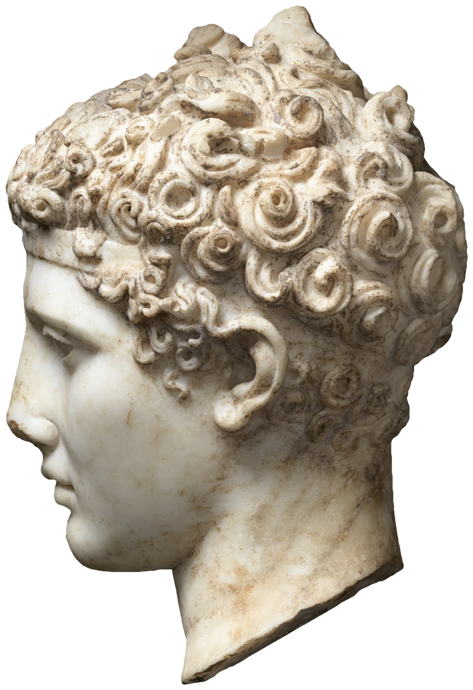

The Greeks went a long way for their marble. The best came from Paros, in the middle of the Cyclades, where the quarrymen followed the purest vein underground and cut it in galleries so deep that they worked by lamplight; the stone was called lychnites, lamp-stone, and Pliny thought that was why. Athens had its own mountain, Pentelikon, ten miles from the Acropolis, a fine, even white with a trace of iron in it that has turned the Parthenon the colour of honey in twenty-five centuries of weather. The Romans, when they had money enough, shipped Greek stone to Italy, until under Augustus they opened the quarries above Luna on the Tuscan coast, the mountain we call Carrara, which was still being cut for Michelangelo fifteen hundred years later and is still being cut today.
What they wanted from it was not only whiteness. Marble is limestone that has been buried, heated and squeezed until it has grown again into a mass of interlocking crystals of calcite, each one clear, and light that falls on it does not stop at the surface. It goes in, a few millimetres, rather more in a good Parian, glancing from one crystal face to the next, and comes out again a little way from where it entered, softened and faintly warm. That is why a marble cheek seems to have depth under it, and why the edge of an ear or a nostril, or the tip of a curl, glows when the light is behind it, while plaster, which turns every ray back at the surface, looks like chalk. It is very nearly what skin does, and sculptors have always known it.
They also helped it. Vitruvius, writing for Augustus, gives the recipe for ganosis: Punic wax melted with a little oil and laid on with a brush, then warmed with a pan of coals held close until it sweats into the surface, and rubbed with a candle and clean linen cloths, “as the naked marble statues are cared for.” Accounts from the sanctuary on Delos record payments for exactly this, along with the oil and the sponges and the cloth, to the men who looked after the statues of the gods. The wax filled the scratches left by the abrasives, softened the glare, and let the light go deeper still; under it the polished face and the rough, drilled hair answered the light differently, and the flesh looked like flesh.
By the eighteenth century the marbles of Rome stood in long galleries, lit from high windows, and the light of day was even and dull. So the custodians of the Vatican and the Capitoline would, for a fee, open the galleries at night and carry a torch among the statues, and it became one of the things a traveller did. Goethe went in the winter of 1787 and thought it the best way of all to see them: the torch, held close and moved slowly, picked out each part on its own and then the passage between them, the eye sockets filled with shadow and the cheekbone caught, and the stone that had stood all day like furniture began to breathe. Canova, it is said, showed his own new work to visitors the same way, at night, by the light of a single candle.